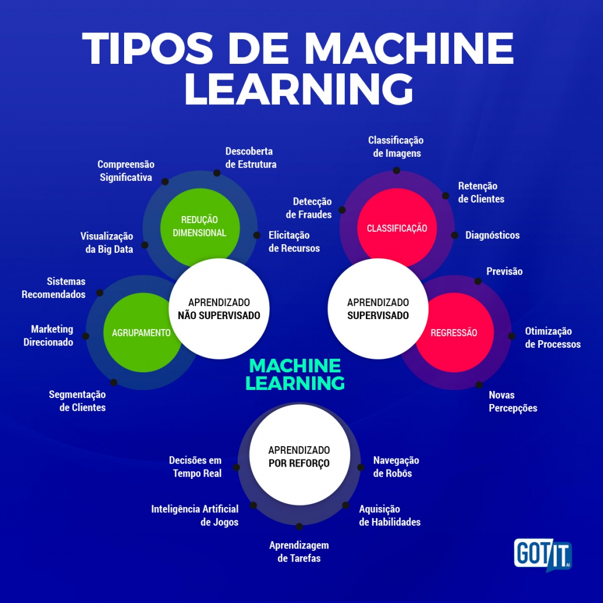
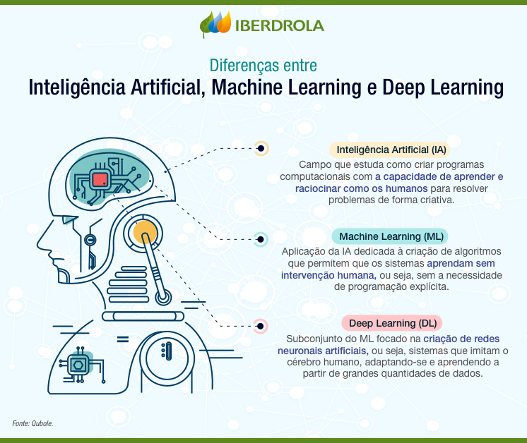

É uma técnica na qual a IA recebe um conjunto de dados rotulados. No conjunto de dados, cada informação de entrada está associada a uma saída que é esperada quando a entrada é apresentada. O objetivo da IA é aprender como mapear novas entradas para as saídas corretas, com base no que aprendeu com os dados de treinamento.
Esse treinamento é o oposto do supervisionada, obviamente, o que ele faz é receber dados não rotulados, com o objetivo de encontrar padrões e estruturas ocultas nos dados.
Esse treinamento usa modelo de redes neurais com muitas camadas, basicamente, são várias camadas de neurônios interconectados. O processo de aprendizado profundo pode ser mesclado com qualquer outro tipo de aprendizado, mas é mais comum ser usado na aprendizagem supervisionado. As redes neurais profundas são capazes de aprender representações complexas dos dados, permitindo-as adequadas para uma quantidade grande de tarefas, incluindo o reconhecimento de imagem e processamento de linguagem natural
 Voltar